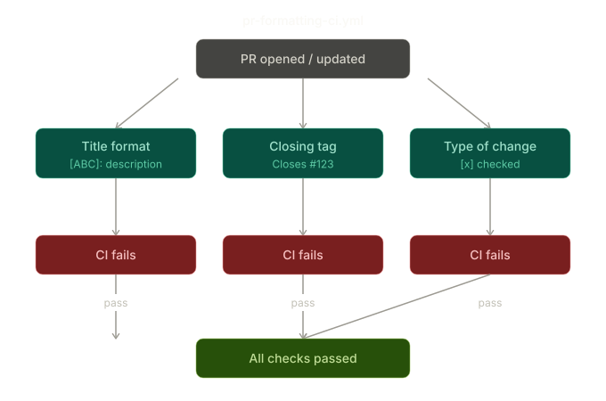
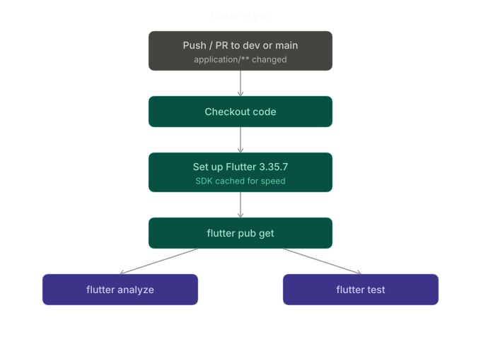
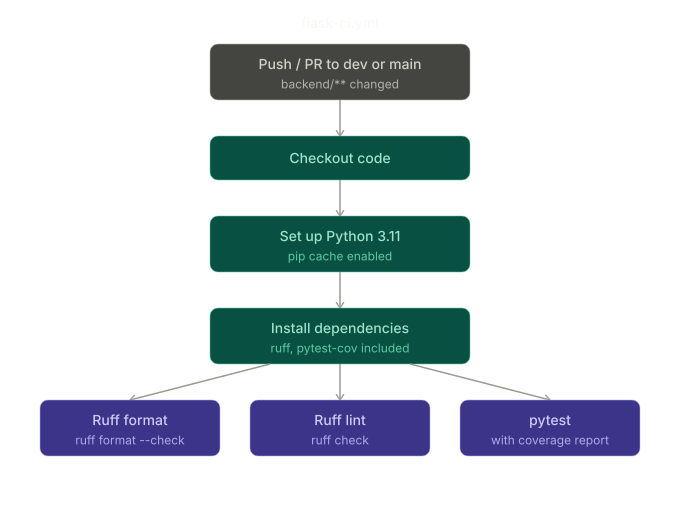
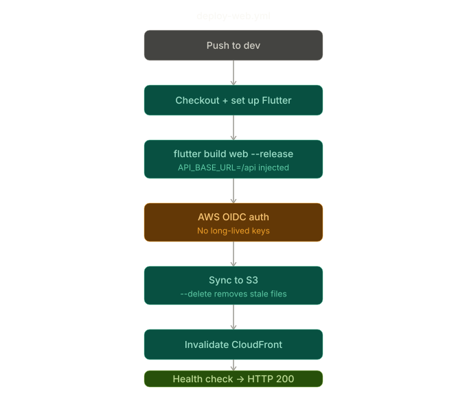
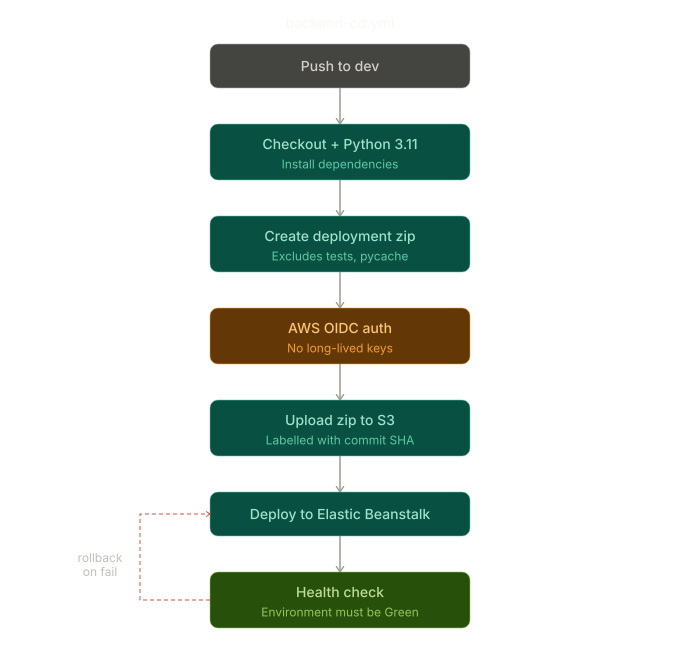

CI/CD Workflows¶
This document describes the GitHub Actions workflows used to automate testing, deployment, and quality checks for the Secondhand Marketplace project.
Overview¶
| Workflow | File | Trigger |
|---|---|---|
| PR Formatting Check | pr-formatting-ci.yml |
Pull request to dev |
| Flutter CI | flutter-ci.yml |
Push/PR to dev or main |
| Flask CI | flask-ci.yml |
Push/PR to dev or main |
| Deploy Web | deploy-web.yml |
Push to dev |
| Backend CD | backend-cd.yml |
Push to dev |
| Publish Docs | mkdocs-cd.yml |
Push to dev or main |
Continuous Integration¶
PR Formatting Check (pr-formatting-ci.yml)¶

Runs on every pull request opened, edited, or synchronized against dev.
Enforces three rules before a PR can be merged:
Title format — PR titles must follow the pattern [ABC]: Description,
for example [FEAT]: Add search functionality. The check uses a regex
^\[[A-Z]+\]: .+ and fails if the title does not match.
Closing tag — The PR body must include a closing reference to an issue,
such as Closes #123, Fixes #123, or Resolves #123. This ensures every
PR is linked to a tracked issue.
Type of change — The PR body must have at least one type of change
checkbox ticked (e.g. [x] Feature). This is checked by scanning the
lines following the "Type of Change" header for a checked box.
Flutter CI (flutter-ci.yml)¶

Runs on pushes and pull requests to dev or main when files inside
application/ are changed. Uses Flutter 3.35.7 stable with SDK caching
enabled to speed up runs.
Steps:
1. Checkout code
2. Set up Flutter with caching
3. Install dependencies (flutter pub get)
4. Analyze project (flutter analyze)
5. Run tests (flutter test)
Flask CI (flask-ci.yml)¶

Runs on pushes and pull requests to dev or main when files inside
backend/ are changed.
Steps:
1. Checkout code
2. Set up Python 3.11 with pip caching
3. Install dependencies including ruff and pytest-cov
4. Check code formatting with Ruff (ruff format --check .)
5. Run linting with Ruff (ruff check)
6. Run tests with coverage report (pytest --cov)
Supabase credentials are passed in as secrets (SUPABASE_URL, SUPABASE_KEY)
during the test step.
Continuous Deployment¶
Deploy Web (deploy-web.yml)¶

Triggers on every push to dev. Builds the Flutter web app and deploys it
to AWS S3, then invalidates the CloudFront cache to serve the latest version.
Uses OIDC-based authentication to assume an IAM role — no long-lived AWS access keys are stored as secrets.
Steps:
1. Checkout code
2. Set up Flutter
3. Install dependencies
4. Build Flutter web in release mode with API_BASE_URL dart-define
(defaults to /api if not set)
5. Configure AWS credentials via OIDC
6. Sync build output to S3 (aws s3 sync --delete)
7. Invalidate CloudFront cache (/*)
8. Verify deployment by checking the production URL returns HTTP 200
Required GitHub variables:
| Variable | Description |
|---|---|
AWS_ROLE_ARN |
IAM role ARN to assume via OIDC |
AWS_REGION |
AWS region (e.g. eu-north-1) |
AWS_S3_BUCKET |
Frontend S3 bucket name |
CLOUDFRONT_DISTRIBUTION_ID |
CloudFront distribution ID |
CLOUDFRONT_DOMAIN |
Production domain for health check |
Required GitHub secrets:
| Secret | Description |
|---|---|
API_BASE_URL |
API base URL injected at build time (should be /api) |
[!WARNING]
API_BASE_URLmust be set to/api. Setting it to a direct Elastic Beanstalk URL will bypass CloudFront and cause HTTP/HTTPS errors. See the CI/CD documentation for more details.
Backend CD (backend-cd.yml)¶

Triggers on every push to dev. Packages the Flask backend and deploys it
to AWS Elastic Beanstalk via the AWS CLI.
Uses OIDC-based authentication — no long-lived AWS access keys are stored as secrets.
Steps:
1. Checkout code
2. Set up Python 3.11
3. Install dependencies
4. Create deployment package (zip of backend/, excluding git files,
pycache, and test files)
5. Configure AWS credentials via OIDC
6. Upload zip to S3 backend bucket
7. Create a new Elastic Beanstalk application version
8. Update the EB environment to the new version
9. Wait for the environment to update and verify health is Green
If health is not Green after deployment, the pipeline fails immediately.
Required GitHub variables:
| Variable | Description |
|---|---|
AWS_ROLE_ARN |
IAM role ARN to assume via OIDC |
AWS_REGION |
AWS region (e.g. eu-north-1) |
AWS_S3_BUCKET_BACKEND |
S3 bucket for backend deployment packages |
Documentation (mkdocs-cd.yml)¶
Triggers on pushes to dev or main. Automatically builds and publishes
the project documentation to GitHub Pages using MkDocs with the Material theme.
Uses GITHUB_TOKEN for authentication — no additional secrets required.